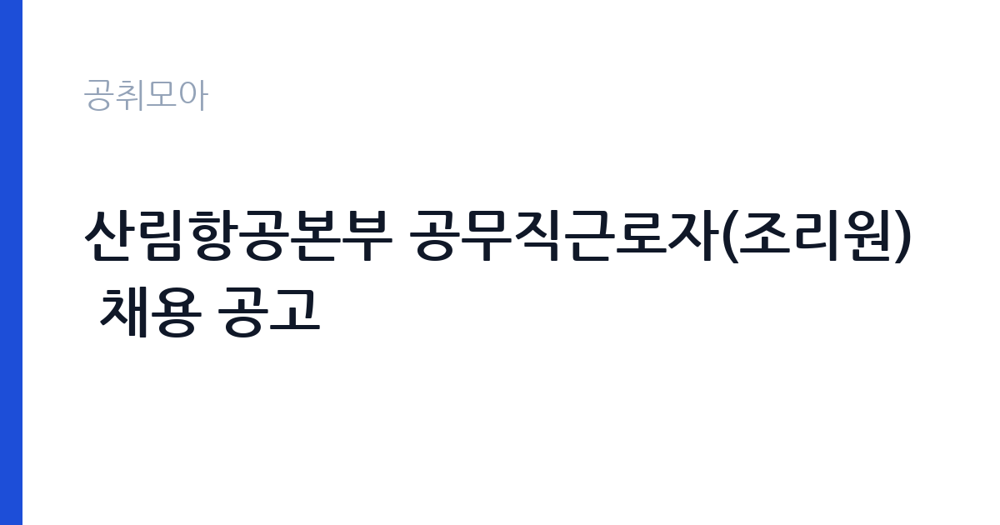

[국가기관] 산림항공본부 공무직근로자(조리원) 채용 공고
산림청 산림항공본부 · 서울 · 마감 2026-11-04 (D-8) · 출처 나라일터

한눈에 보는 모집 조건
| 기관 | 산림청 산림항공본부 |
|---|---|
| 공고명 | 산림항공본부 공무직근로자(조리원) 채용 공고 |
| 고용형태 | 공무직 |
| 근무지 | 서울 |
| 게시일 | 2026-10-27 |
| 마감일 | 2026-11-04 (D-8) |
지원자격, 이렇게 읽으세요
- 공무직(조리원) 1명 공무직(조리원) 1명 공무직(조리원) 1명 공무직(
- 접수 ~2026-11-04 마감
- 세부 조건은 원문 공고문 확인
공무직 근로자는 공무원이 아니라 근로기준법이 적용되는 근로자이지만 기간의 정함이 없는 무기계약으로 채용되는 경우가 많아 정년까지 근무가 가능합니다. 채용은 공무원 시험과 달리 기관의 자체 전형으로 진행되고 인사 규정과 임금표를 적용받습니다. 이번 공고는 산림청 산림항공본부가 직접 진행하는 자체 전형입니다. 조리 직무는 조리사 자격증 소지자를 요구하거나 우대하는 경우가 많습니다. 최근에는 위생교육 이수와 건강진단 결과를 제출해야 하므로 채용 전 건강 상태를 준비해야 합니다. 대체인력이나 단기 계약으로 채용되면 근무 기간이 명시되며, 기존 직원의 휴직이나 출산휴가 기간과 맞물리는 경우가 흔합니다. 급식 인원과 조리 인력이 정해져 있어 혼자서 많은 양을 처리해야 할 수 있습니다. 응시 자격 판단이 애매하면 접수 전에 채용 담당 부서로 문의하는 편이 안전합니다. 동일 직무 경력자와 경쟁하게 되므로, 관련 경험이 있다면 증명서에 업무 내용이 구체적으로 적히도록 요청하십시오. 우대 사항에 해당하면 증빙을 반드시 첨부해야 하며, 누락하면 가점 없이 평가됩니다.
이 공고의 포인트
이 건은 산림청 산림항공본부가 같은 시기에 낸 2개 모집분야 가운데 조리·급식 직무입니다. 다른 직무 공고와 요건이 다르므로 지원 전에 모집분야 표를 대조해야 합니다. 이 공고의 첫 번째 포인트는 고용 형태입니다. 무기계약으로 채용되면 정년까지 근무가 가능해 재계약 부담이 없습니다. 반대로 기간제로 채용되는 공고라면 계약 기간을 먼저 확인해야 합니다. 두 번째는 업무 범위가 명확하다는 점입니다. 조리·급식 직무로 채용되므로 배치 이후 담당 업무가 크게 흔들리지 않습니다. 세 번째는 근무지입니다. 서울 지역 근무로 접근성은 좋지만 그만큼 지원자가 몰리는 지역이므로 경쟁률을 넉넉히 잡아야 합니다. 접수 기간이 길지 않아 서류 준비와 자격 확인을 동시에 진행해야 합니다. 같은 직무 공고 중에서는 접수 마감이 가장 빨라 일정을 앞당겨 잡아야 합니다. 다만 선발 인원이 1명으로 많지 않아 자격을 갖춘 지원자가 몰리면 경쟁률이 높아질 수 있습니다.
전형은 어떻게 진행되나
채용 절차는 공고문에 안내된 순서대로 진행되며, 서류 접수 마감 후에는 추가 접수나 서류 보완이 이뤄지지 않는 것이 원칙입니다. 서류심사에서는 응시자격과 제출서류의 형식 요건을 기계적으로 확인하므로, 경력 증명서의 기간과 직무 내용이 공고의 요건과 정확히 맞아야 합니다. 면접은 지원자 수에 따라 집단면접과 개별면접으로 나뉘고, 직무 관련 질문과 상황 대응 질문이 함께 나옵니다. 합격자 발표는 개별 통보 또는 홈페이지 게시로 이뤄지며 이후 임용 절차가 진행됩니다. 면접조 편성과 대기 시간이 공지되므로 당일 도착 시간을 여유 있게 잡으십시오.
이런 분께 추천해요
- 조리사 자격 또는 급식 조리 경력이 있는 분
- 위생 수칙을 습관적으로 지키는 분
- 이른 출근과 정해진 배식 시간을 지킬 수 있는 분
지원 전 체크리스트
- 응시자격 요건과 경력 기준을 충족하는가 — 경력은 증명서로 입증해야 합니다
- 무기계약 여부와 정년 기준을 공고문에서 확인했는가
- 제출서류 목록을 모두 준비했는가 — 누락 시 서류 단계에서 탈락합니다
- 접수 마감 2026-11-04 이전에 접수 방식을 확인해 제출했는가
모집 일정과 제출 타이밍
공고 게시일은 2026-10-27, 접수 마감은 2026-11-04입니다. 준비 기간은 약 8일로 서류 준비와 자격 증빙을 함께 처리하기에는 넉넉하지 않은 편입니다. 첫 이틀 안에 공고문과 첨부 서식을 내려받아 요건을 확인하고 남은 기간에 증빙 서류를 발급받는 일정이 현실적입니다. 면접은 서류 합격자 발표 후 짧은 간격으로 진행되는 경우가 많으므로 서류 제출과 동시에 면접 준비를 시작하는 편이 안전합니다. 마감일에는 접수 시스템이 몰리므로 하루 전까지 제출을 마치는 것이 좋습니다. 서류 발표일과 면접일 사이가 짧은 경우가 많아 면접 준비는 접수와 동시에 시작하는 편이 좋습니다.
직무 이해하기: 국가기관
산림청과 지방산림청은 산림 보호와 산불 대응, 산림 자원 관리를 맡는 중앙행정기관입니다. 지방산림청은 국유림을 관리하며 산불 진화와 병해충 방제, 사방 사업을 수행합니다. 산불조심기간에는 현장 인력이 대기 체계로 운영되고 발생 시 즉시 출동합니다. 조리 업무는 급식 인원에 맞춰 식단을 준비하고 배식하는 일입니다. 재료 검수와 손질, 조리, 배식, 세척, 잔반 처리까지 하루 주기가 정해져 있습니다. 위생 관리 기준에 따라 냉장고 온도와 조리 기구 소독 상태를 기록하고 식중독 예방 수칙을 지켜야 합니다. 학교나 복지시설, 부대 급식소처럼 대상이 정해진 곳에서는 알레르기 유발 식품 표시와 식단표 관리도 업무에 포함됩니다. 아침과 점심 시간에 맞춰 이른 출근이 필요한 경우가 많습니다. 이 직무는 담당 구역이 정해져 있어 근무지에 따라 실제 업무 환경이 달라집니다. 현장 업무와 사무 업무의 비중은 기관의 사업 일정에 따라 계절별로 달라집니다.
자기소개서 작성 팁
조리 지원서는 위생과 안전에 대한 습관을 증명하는 데 집중하십시오. 이전 근무지에서 지킨 위생 수칙, 대량 조리 경험, 식단 관리 경험을 구체적으로 쓰십시오. 인원이 적은 급식소에서는 혼자 여러 업무를 처리해야 하므로 동시에 여러 작업을 진행한 경험이 소재가 됩니다. 장기 근무 의사와 이른 출근 가능 여부도 함께 밝히십시오. 직무 경험이 많지 않다면 경험의 양보다 과정을 구체적으로 쓰는 편이 낫습니다. 어떤 상황에서 무엇을 판단했고 어떤 결과가 나왔는지 순서대로 서술하면 신뢰가 생깁니다. 지원 동기와 기여 방안은 한 문단씩 짧게 유지하고, 가장 자신 있는 경험에 분량을 몰아주십시오. 마지막 문장은 포부보다 구체적인 실행 계획으로 끝내는 것이 좋습니다.
면접 준비 포인트
면접에서는 위생 관리와 팀 협업 태도를 확인합니다. 조리 중 위생 사고를 예방하기 위해 어떤 절차를 지키는지, 식단이 갑자기 바뀌면 어떻게 대응하는지, 동료와 역할이 겹칠 때 어떻게 조율하는지를 묻습니다. 조리 자격과 경력은 서류에서 확인되므로 면접에서는 실제 작업 속도와 안전 관리 방식을 보여주는 것이 좋습니다. 면접은 공고문에 적힌 직무 내용을 얼마나 이해하고 있는지 확인하는 질문으로 시작하는 경우가 많으니, 모집분야 문구를 그대로 읽어 두는 것이 도움이 됩니다. 면접은 공고문에 적힌 직무 내용을 얼마나 이해하고 있는지 확인하는 질문으로 시작하는 경우가 많으니, 모집분야 문구를 그대로 읽어 두는 것이 도움이 됩니다.
급여·근무조건 읽는 법
산림청 산림항공본부의 구체적인 보수 수치는 이 공고 원문의 처우 항목과 보수표에서 확인해야 합니다. 공시 자료로 확인되지 않은 금액은 이 글에서 추정해 제시하지 않습니다. 알리오 2025년 결산 공시 기준 공공기관 전체 일반정규직 1인당 평균보수는 7,376만 9천원, 신입사원 평균초임은 4,031만 6천원입니다(무기계약직 미포함). 조리 직무의 보수는 기관의 직종별 임금표를 따르며, 기본급에 정액급식비와 명절휴가비, 초과근무수당이 더해집니다. 조리사 자격이나 경력에 따라 호봉이 달라지는 경우가 있으므로 경력을 증빙할 수 있는 자료를 준비하면 유리합니다.실제 금액은 공고문의 처우 항목에서 확인하십시오. 대체인력 채용은 계약 기간이 짧아 총 급여 규모도 함께 따져야 합니다. 2026년 적용 최저임금은 시급 10,320원, 월 환산 2,156,880원(주 40시간·209시간 기준)입니다. 고용노동부 고시 제2025-47호로 확정된 금액입니다. 공고문에 금액이 제시되지 않은 항목은 원문 보수표나 처우 설명에서 확인해야 하며 확인되지 않은 수치는 쓰지 않는 것이 원칙입니다. 비교할 때는 월 급여뿐 아니라 상여·명절휴가비·복지포인트·초과근무수당까지 포함한 연간 총액으로 계산하십시오. 기간제라면 계약 기간 동안의 총액을, 무기계약이라면 호봉 상승과 정년까지의 누적 소득을 기준으로 판단하는 편이 정확합니다.
자주 묻는 질문
- 선발 인원은 몇 명인가요?
공고문 기준 1명입니다. 직종별로 인원이 나뉘는 경우가 있으니 모집분야 항목을 함께 확인하십시오. - 근무지는 어디인가요?
서울 지역의 산림청 산림항공본부 소속 근무지입니다. 세부 주소와 출퇴근 조건은 원문 공고문에서 확인할 수 있습니다. - 보수는 얼마인가요?
채용 신분(공무직)과 기관 임금 규정에 따라 정해지며 구체적인 금액은 공고문 처우 항목에 제시됩니다. 금액이 공개되지 않은 경우에는 원문의 보수표를 확인하십시오.
함께 보면 좋은 공고
[국가기관] 충남대학교 대학회계직원(정규직) 공개채용 공고[대학상용직 평생교육사, 대학공무직 경비(일직)] — 마감 2026-11-06[국가기관] 충남대학교 AI정보화본부 AI컴퓨팅센터 기간제계약직 (전산직) 공개채용 공고 — 마감 2026-11-06[국가기관] 충남대학교 의과대학 「의학교육 활성화 지원사업」 행정사무원(기간제 계약직 자체직원) 채용 공고 — 마감 2026-11-03출처: 나라일터 공개정보를 바탕으로 공취모아가 정리한 안내글입니다. 모집 조건·일정은 변경될 수 있으니 지원 전 반드시 원문 공고문을 확인하세요. 본 글은 정보 제공용이며 합격을 보장하지 않습니다.